CHEBFUN GUIDE 7: LINEAR DIFFERENTIAL OPERATORS AND EQUATIONS
Tobin A. Driscoll, November 2009, revised February 2011
Contents
- 7.1 Introduction
- 7.2 About linear chebops
- 7.3 Chebop syntax
- 7.4 Solving differential and integral equations
- 7.5 Eigenvalue problems -- EIGS
- 7.6 Exponential of a linear operator -- EXPM
- 7.7 Algorithms and accuracy
- 7.8 Block operators and systems of equations
- 7.9 Nonlinear equations by Newton iteration
- 7.10 BVP Systems with Unknown Paramters
- 7.11 References
7.1 Introduction
Chebfun has powerful capabilities for solving ordinary differential equations as well as partial differential equations involving one space and one time variable. The present chapter is devoted to chebops, the fundamental Chebfun tools for solving differential (or integral) equations. In particular we focus here on the linear case. We shall see that one can solve a linear two-point boundary value problem to high accuracy by a single "backslash" command. Nonlinear extensions are described in Section 7.9 and in Chapter 10, and PDEs in Chapter 11.
Let's set the clock running, so we can measure at the end how long it took to produce this chapter.
tic
7.2 About linear chebops
A chebop represents a differential or integral operator that acts on chebfuns. This chapter focusses on the linear case, though from a user's point of view linear and nonlinear problems are quite similar. One thing that makes linear operators special is that EIGS and EXPM can be applied to them, as we shall describe in Sections 7.5 and 7.6.
Like chebfuns, chebops are built on the premise of appoximation by piecewise Chebyshev polynomial interpolants; in the context of differential equations such techniques are called spectral collocation methods. As with chebfuns, the discretizations are chosen automatically to achieve the maximum possible accuracy available from double precision arithmetic.
The linear part of the chebop package was conceived at Oxford by Bornemann, Driscoll, and Trefethen [Driscoll, Bornemann & Trefethen 2008], and the implementation is due to Driscoll, Hale, and Birkisson [Birkisson & Driscoll 2011, Driscoll & Hale 2011] . Much of the functionality of linear chebops is actually implemented in a class called linop, but users generally do not need to deal with linops directly.
7.3 Chebop syntax
A chebop has a domain, an operator, and sometimes boundary conditions. For example, here is the chebop corresponding to the second-derivative operator on [-1,1]:
L = chebop(-1,1); L.op = @(x,u) diff(u,2);
(For scalar operators like this, one may also dispense with the x and just write L.op = @(u) diff(u,2).) This operator can now be applied to chebfuns defined on [-1,1]. For example, taking two derivatives of sin(3x) multiplies its amplitude by 9:
u = chebfun('sin(3*x)');
norm(L(u),inf)
ans = 9.000000000000025
Both the notations L*u and L(u) are allowed, with the same meaning.
min(L*u)
ans = -9.000000000000025
Mathematicians generally prefer L*u if L is linear and L(u) if it is nonlinear.
A chebop can also have left and/or right boundary conditions. For a Dirichlet boundary condition it's enough to specify a number:
L.lbc = 0; L.rbc = 1;
More complicated boundary conditions can be specified with anonymous functions, which are then forced to take zero values at the boundary. For example, the following sequence imposes the conditions u=0 at the left boundary and u'=1 at the right:
L.lbc = @(u) u; L.rbc = @(u) diff(u)-1;
We can see a summary of L by typing the name without a semicolon:
L
L = chebop
Linear operator operating on chebfuns defined on:
interval [-1,1]
representing the operator:
@(x,u)diff(u,2)
left boundary condition:
@(u)u = 0
right boundary condition:
@(u)diff(u)-1 = 0
with n = 6 realization:
32.5709 -51.8814 27.9770 -14.2643 10.1922 -4.5944
-0.5502 5.5850 -10.1042 7.0354 -3.3398 1.3737
1.3737 -3.3398 7.0354 -10.1042 5.5850 -0.5502
-4.5944 10.1922 -14.2643 27.9770 -51.8814 32.5709
1.0000 0 0 0 0 0
-0.5000 1.1056 -1.5279 2.8944 -10.4721 8.5000
Boundary conditions are needed for solving differential equations, but they have no effect when a chebop is simply applied to a chebfun. Thus, despite the boundary conditions just specified, L*u gives the same answer as before:
norm(L*u,inf)
ans = 9.000000000000025
Here is an example of an integral operator, the operator that maps u defined on [0,1] to its indefinite integral:
L = chebop(0,1); L.op = @(x,u) cumsum(u);
For example, the indefinite integral of x is x^2/2:
x = chebfun('x',[0,1]); hold off, plot(L*x)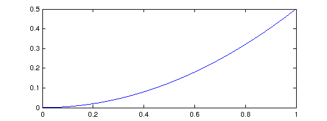
Chebops can be specified in various ways, including all in a single line. For example we could write
L = chebop(@(x,u) diff(u)+diff(u,2),[-1,1])
L = chebop
Linear operator operating on chebfuns defined on:
interval [-1,1]
representing the operator:
@(x,u)diff(u)+diff(u,2)
with n = 6 realization:
33.1000 -57.8885 37.9331 -22.1115 16.4669 -7.5000
18.6679 -30.3623 14.6833 -4.5889 2.8292 -1.2292
-1.1236 5.3167 -9.8961 7.4069 -2.8000 1.0961
0.3321 -1.0111 4.1708 -10.2377 9.3167 -2.5708
-0.6764 1.5931 -2.8000 10.6833 -32.7039 23.9039
-8.5000 18.6780 -25.1672 43.7220 -78.8328 50.1000
Or we could include boundary conditions:
L = chebop(@(x,u) diff(u)+diff(u,2),[-1,1],@(u) 0,@(u) diff(u))
L = chebop
Nonlinear operator operating on chebfuns defined on:
interval [-1,1]
representing the operator:
@(x,u)diff(u)+diff(u,2)
left boundary condition:
@(u)0 = 0
right boundary condition:
@(u)diff(u) = 0
Here are the fields of a chebop:
disp(L)
chebop
Properties:
domain: [1x1 domain]
op: @(x,u)diff(u)+diff(u,2)
opshow: {'@(x,u)diff(u)+diff(u,2)'}
lbc: @(u)0
lbcshow: @(u)0
rbc: @(u)diff(u)
rbcshow: @(u)diff(u)
bc: []
bcshow: []
init: []
numvar: 2
dim: []
scale: []
jumpinfo: []
For operators applying to more than one variable (needed for solving systems of differential equations), see Section 7.8.
7.4 Solving differential and integral equations
In Matlab, if A is a square matrix and b is a vector, then the command x=A\b solves the linear system of equations A*x=b. Similarly in Chebfun, if L is a differential operator and f is a Chebfun, then u=L\f solves the differential equation L(u)=f. More generally L might be an integral or integro-differential operator. (Of course, just as you can solve Ax=b only if A is nonsingular, you can solve L(u)=f only if the problem is well-posed.)
For example, suppose we want to solve the differential equation u"+x^3*u = 1 on the interval [-3,3] with Dirichlet boundary conditions. Here is a Chebfun solution:
L = chebop(-3,3); L.op = @(x,u) diff(u,2) + x.^3.*u; L.lbc = 0; L.rbc = 0; u = L\1; plot(u)

We confirm that the computed u satisfies the differential equation to high accuracy:
norm(L(u)-1)
ans =
2.407787028687496e-12
Let's change the right-hand boundary condition to u'=0 and see how this changes the solution:
L.rbc = @(u) diff(u); u = L\1; hold on, plot(u,'r')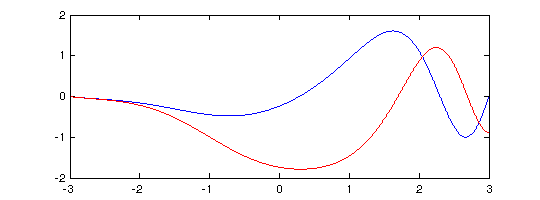
An equivalent to backslash is the SOLVEBVP command.
v = solvebvp(L,1); norm(u-v)
ans =
0
Periodic boundary conditions can be imposed with the special boundary condition string L.bc='periodic', which will find a periodic solution, provided that the right-side function is also periodic.
L.bc = 'periodic'; u = L\1; hold off, plot(u)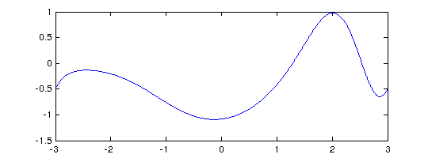
A command like L.bc=100 imposes the corresponding Dirichlet condition at both ends of the domain:
L.bc = 100; plot(L\1)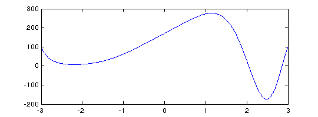
Boundary conditions can also be specified in a single line, like this specification of an operator on [-1,1] mapping u to u"+10000u:
L = chebop(@(x,u) diff(u,2)+10000*u,[-1,1],0,@(u) diff(u))
L = chebop
Linear operator operating on chebfuns defined on:
interval [-1,1]
representing the operator:
@(x,u)diff(u,2)+10000*u
left boundary condition:
0
right boundary condition:
@(u)diff(u) = 0
with n = 6 realization:
1.0e+03 *
4.6772 6.1042 -1.1220 0.5593 -0.3979 0.1792
-0.5733 1.6642 9.5887 -1.0152 0.5900 -0.2543
-0.2543 0.5900 -1.0152 9.5887 1.6642 -0.5733
0.1792 -0.3979 0.5593 -1.1220 6.1042 4.6772
0.0010 0 0 0 0 0
-0.0005 0.0011 -0.0015 0.0029 -0.0105 0.0085
Thus it is possible to set up and solve a differential equation and plot the solution with a single line of Chebfun:
plot(chebop(@(x,u) diff(u,2)+50*(1.2+sin(x)).*u,[-20,20],0,0)\1)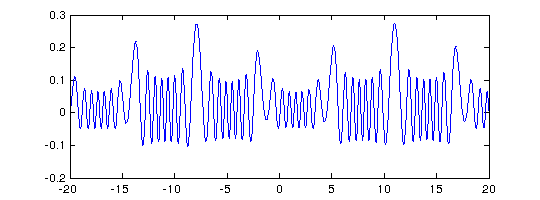
When Chebfun solves differential or integral equations, the coefficients may be piecewise smooth rather than globally smooth. (This is new in Chebfun Version 4.) For example, here is a problem involving a coefficient that jumps from +1 for negative x to -1 for positive x:
L = chebop(-60,60); L.op = @(x,u) diff(u,2) - sign(x).*u; L.lbc = 1; L.rbc = 0; u = L\0; plot(u)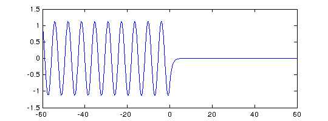
7.5 Eigenvalue problems -- EIGS
In Matlab, EIG finds all the eigenvalues of a matrix whereas EIGS finds some of them. A differential or integral operator normally has infinitely many eigenvalues, so one could not expect an overload of EIG for chebops. EIGS, however, has been overloaded. Just like Matlab EIGS, Chebfun EIGS finds 6 eigenvalues by default, together with eigenfunctions if requested. (For full details see [Driscoll, Bornemann & Trefethen 2008].) Here's an example involving sine waves.
L = chebop(@(x,u) diff(u,2),[0,pi]); L.bc = 0; [V,D] = eigs(L); diag(D) clf, plot(V(:,1:4))
ans = -1.000000000000000 -4.000000000000179 -9.000000000000441 -16.000000000000696 -25.000000000000011 -35.999999999999851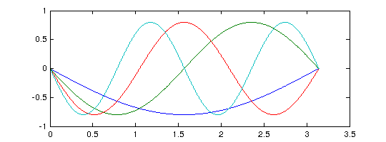
By default, eigs tries to find the six eigenvalues whose eigenmodes are "most readily converged to", which approximately means the smoothest ones. You can change the number sought and tell eigs where to look for them. Note, however, that you can easily confuse eigs if you ask for something unreasonable, like the largest eigenvalues of a differential operator.
Here we compute 10 eigenvalues of the Mathieu equation and plot the 9th and 10th corresponding eigenfunctions, known as an elliptic cosine and sine. Note the imposition of periodic boundary conditions.
q = 10; A = chebop(-pi,pi); A.op = @(x,u) diff(u,2) - 2*q*cos(2*x).*u; A.bc = 'periodic'; [V,D] = eigs(A,16,'LR'); % eigenvalues with largest real part subplot(1,2,1), plot(V(:,9)), title('elliptic cosine') subplot(1,2,2), plot(V(:,10)), title('elliptic sine')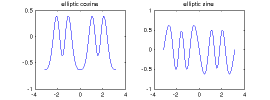
Eigs can also solve generalized eigenproblems, that is, problems of the form A*u = lambda*B*u. For these one must specify two linear chebops A and B, with the boundary conditions all attached to A. Here is an example of eigenvalues of the Orr-Sommerfeld equation of hydrodynamic linear stability theory at a Reynolds number close to the critical value for eigenvalue instability [Schmid & Henningson 2001]. This is a fourth-order generalized eigenvalue problem, requiring two conditions at each boundary.
Re = 5772; B = chebop(-1,1); B.op = @(x,u) diff(u,2) - u; A = chebop(-1,1); A.op = @(x,u) (diff(u,4)-2*diff(u,2)+u)/Re - 1i*(2*u+(1-x.^2).*(diff(u,2)-u)); A.lbc = @(u) [u diff(u)]; A.rbc = @(u) [u diff(u)]; lam = eigs(A,B,60,'LR'); clf, plot(lam,'r.'), grid on, axis equal spectral_abscissa = max(real(lam))
spectral_abscissa =
-7.818209348969998e-05
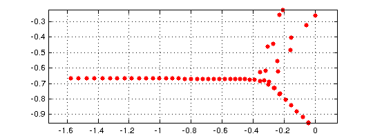 7.6 Exponential of a linear operator -- EXPM
In Matlab, EXPM computes the exponential of a matrix, and this command has been overloaded in Chebfun to compute the exponential of a linear operator. If L is a linear operator and E(t) = expm(t*L), then the partial differential equation u_t = Lu has solution u(t) = E(t)*u(0). Thus by taking L to be the 2nd derivative operator, for example, we can use expm to solve the heat equation u_t = u_xx:
A = chebop(@(x,u) diff(u,2),[-1,1]); f = chebfun('exp(-1000*(x+0.3).^6)'); clf, plot(f,'r'), hold on, c = [0.8 0 0]; for t = [0.01 0.1 0.5] E = expm(t*A & 'dirichlet'); plot(E*f,'color',c), c = 0.5*c; ylim([-.1 1.1]) end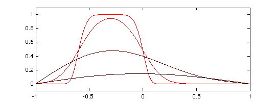
Here is a more fanciful analogous computation with a complex initial function obtained from the "scribble" command introduced in Chapter 5. (As it happens, expm does not map discontinuous data with the usual Chebfun accuracy, so warning messages are generated.)
f = scribble('BLUR'); clf D = chebop([-1,1],@(x,u) diff(u,2)); k = 0; for t = [0 .0001 .001 .01] k = k+1; subplot(2,2,k) if t==0, Lf = f; else L = expm(t*D & 'neumann'); Lf = L*f; end plot(Lf,'linewidth',3,'color',[.6 0 1]) xlim(1.05*[-1 1]), axis equal text(.3,.7,sprintf('t = %6.4f',t),'fontsize',12), axis off end
Warning: Nonsmooth initial data may degrade accuracy in the result. Warning: Nonsmooth initial data may degrade accuracy in the result. Warning: Nonsmooth initial data may degrade accuracy in the result.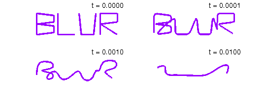
7.7 Algorithms and accuracy
We'll say a word, just a word, about how Chebfun carries out these computations. The methods involved are Chebyshev spectral methods on adaptive grids. The general ideas are presented in [Trefethen 2000], [Driscoll, Bornemann & Trefethen 2008], and [Driscoll 2010], but Chebfun actually uses modifications of these methods to be described in [Driscoll & Hale 2011] involving a novel mix of Chebyshev grids of the first and second kinds.
The basic idea is that linear differential (or integral) operators are disretized by spectral differentiation (or integration) matrices. Such a matrix applies the desired operator to polynomials via interpolation at Chebyshev points, with certain rows of the matrix modified to impose boundary conditions. When a differential equation is solved in Chebshev, the problem is solved on a sequence of grids of size 9, 17, 33, ... until convergence is achieved in the usual Chebfun sense defined by decay of Chebyshev expansion coefficients. Much more than just this is really going on, however, including the decomposition of intervals into subintervals to handle coefficients that are only piecewise smooth.
One matter you might not guess was challenging is the determination of whether or not an operator is linear! In Chebfun the operator is defined by an anonymous function, but if it is linear, special actions should be possible such as application of EIGS and EXPM and solution of differential equations in a single step without iteration. Chebfun includes special devices to determine whether a chebop is linear so that these effects can be realized.
As mentioned, the discretization length of a Chebfun solution is chosen automatically according to the instrinsic resolution requirements. However, the matrices that arise in Chebyshev spectral methods are notoriously ill-conditioned. Thus the final accuracy in solving differential equations in Chebfun is rarely close to machine precision. Typically one loses two or three digits for second-order differential equations and five or six for fourth-order problems.
7.8 Block operators and systems of equations
Some problems involve several variables coupled together. In Chebfun, these are treated with the use of quasimatrices, that is, chebfuns with several columns.
For example, suppose we want to solve the coupled system u'=v, v'=-u with initial data u=1 and v=0 on the interval [0,10*pi]. (This comes from writing the equation u"=-u in first-order form, with v=u'.) We can solve the problem like this:
L = chebop(0,10*pi); L.op = @(x,u,v) [diff(u)-v, diff(v)+u]; L.lbc = @(u,v) [u-1,v]; rhs = [0, 0]; U = L\rhs;
The solution U is an "infinity-by-2" Chebfun quasimatrix with columns u=U(:,1) and v=U(:,2). Here is a plot:
clf, plot(U)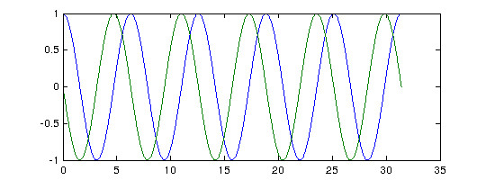
The overloaded "spy" command helps clarify the structure of this operator we just made use of:
spy(L)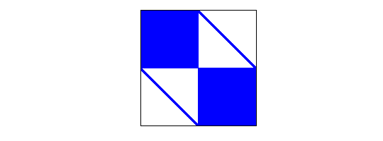
This image shows that L maps a pair of functions [u;v] to a pair of functions [w;y], where the dependences of w on u and y on v are global (because of the derivative) whereas the dependences of w on v and y on u are local (diagonal). Note that for such interpretations we think of [u;v] and [w;y] as 2-vectors oriented columnwise, but the Chebfun syntax actually builds them as [u,v] and [w,y]. This is potentially confusing but was necessary since [u;v] has the quite different meaning in Chebfun of a concatenation of two functions into a single function on a longer interval.
To illustrate the solution of an eigenvalue problem involving a block operator, we can take much the same idea. The eigenvalue problem u"=c^2u with u=0 at the boundaries can be written in first order form as u'=cv, v'=cu. Here are the first 7 eigenvalues:
L = chebop(0,10*pi); L.op = @(x,u,v) [diff(v), diff(u)]; L.lbc = @(u,v) u; L.rbc = @(u,v) u; [U,V,D] = eigs(L,7); eigenvalues = diag(D)
eigenvalues = 0.000000000000000 -0.000000000000000 + 0.100000000000000i -0.000000000000000 - 0.100000000000000i 0.000000000000000 + 0.200000000000000i 0.000000000000000 - 0.200000000000000i -0.000000000000000 + 0.300000000000000i -0.000000000000000 - 0.300000000000000i
Notice that two eigenfunction quasimatrices U and V have been specified among the output variables. (If just one had been specified, the output would have been a cell array containing two quasimatrices.) To see the u eigenfunctions, we can plot U. As it happens, the eigenfunctions as computed by eigs are imaginary, so before plotting we divide by 1i to make them real, and take the real part to filter out rounding errors:
eigenfunctions = real(U/1i); plot(eigenfunctions)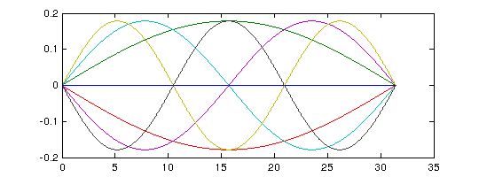
The operator in this eigenvalue problem has a simpler structure than before:
spy(L)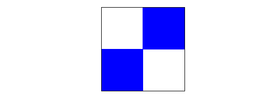
7.9 Nonlinear equations by Newton iteration
As mentioned at the beginning of this chapter, nonlinear differential equations are discussed in Chapter 10. As an indication of some of the possibilities, however, we now illustrate how a sequence of linear problems may be useful in solving nonlinear problems. For example, the nonlinear BVP
0.001u'' - u^3 = 0, u(-1)=1, u(1)=-1
could be solved by Newton iteration as follows.
L = chebop(-1,1); L.op = @(x,u) 0.001*diff(u,2); J = chebop(-1,1); x = chebfun('x'); u = -x; nrmdu = Inf; while nrmdu > 1e-10 r = L*u - u.^3; J.op = @(du) .001*diff(du,2) - 3*u.^2.*du; J.bc = 0; du = -(J\r); u = u+du; nrmdu = norm(du) end clf, plot(u)
nrmdu =
0.260668532007022
nrmdu =
0.164126069559934
nrmdu =
0.098900892365437
nrmdu =
0.053787171683936
nrmdu =
0.021518152858429
nrmdu =
0.003586696693250
nrmdu =
8.951602488791198e-05
nrmdu =
5.357404996582269e-08
nrmdu =
1.933405655077067e-14
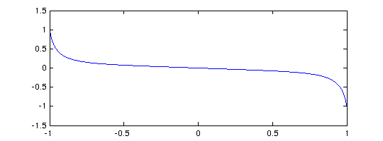 Note the beautifully fast convergence, as one expects with Newton's method. The chebop J defined in the WHILE loop is a Jacobian operator (=Frechet derivative), which we have constructed explicitly by differentiating the nonlinear operator defining the ODE. In Section 10.4 we shall see that this whole Newton iteration can be automated by use of Chebfun's "nonlinear backslash" capability, which utilizes Automatic Differentiation (AD) to construct the Frechet derivative automatically. In fact, all you need to type is
N = chebop(-1,1); N.op = @(x,u) 0.001*diff(u,2) - u.^3; N.lbc = 1; N.rbc = -1; v = N\0;
The result is the same as before to many digits of accuracy:
norm(u-v)
ans =
5.935543677692201e-14
Here is how long it took to execute this chapter:
fprintf('Time to execute this chapter: %3.1f seconds',toc)
Time to execute this chapter: 23.5 seconds
7.10 BVP Systems with Unknown Paramters
It is sometimes the case that ODEs or systems of ODEs contain unknown parameter values which must be computed for as part of the solution. An example of this is Matlab's builti-in MAT4BVP example. These parameters can always be included in system as unkowns with zero derivatives, but this can be computationally inefficient. Chebfun allows the option of explicit treatment of the parameters. Often the dependence of the solution on these parameters is nonlinear (such as in the case below), and this discussion might better have been left to Chapter 10, but since, from the user perspective, ther is little difference in this case, we include it here.
Below is an example of such a paramterised problem, which is represents a linear pendulum with a forcing sine-wave term of an unknown frequency T. The task is to compute the solution for which u(-pi)=u(pi)=u'(pi)=1;
N = chebop(@(x,u,T) diff(u,2) - u - sin(T.*x/pi),[-pi pi]); N.lbc = @(u,T) u-1; N.rbc = @(u,T) [u-1, diff(u)-1]; uT = N\0; u = uT(:,1); T = uT(0,2) plot(u)
T = 0.005438812795288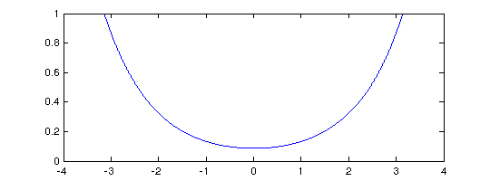
As the system is nonlinear in T, we can expect that there will be more than one solution. Indeed, if we choose a different initial guess for T, we can converge to one of these.
N.init = [1,7]; uT = N\0; u = uT(:,1); T = uT(0,2) plot(u)
T = 4.044049959218818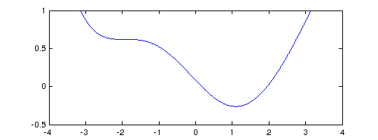
Unfortunately, this functionality is not yet available for eigenvalue problem.
7.11 References
[Birkisson & Driscoll 2011] A. Birkisson and T. A. Driscoll, Automatic Frechet differentiation for the numerical solution of boundary-value problems, ACM Transactions on Mathematical Software, to appear
[Driscoll 2010] T. A. Driscoll, Automatic spectral collocation for integral, integro-differential, and integrally reformulated differential equations, Journal of Computational Physics 229 (2010), 5980-5998.
[Driscoll, Bornemann & Trefethen 2008] T. A. Driscoll, F. Bornemann, and L. N. Trefethen, "The chebop system for automatic solution of differential equations", BIT Numerical Mathematics 46 (2008),701-723.
[Driscoll & Hale 2011] T. A. Driscoll and N. Hale, manuscript in preparation, 2011.
[Fornberg 1996] B. Fornberg, A Practical Guide to Pseudospectral Methods, Cambridge University Press, 1996.
[Schmid & Henningson 2001] P. J. Schmid and D. S. Henningson, Stability and Transition in Shear Flows, Springer, 2001.
[Trefethen 2000] L. N. Trefethen, Spectral Methods in MATLAB, SIAM, 2000.